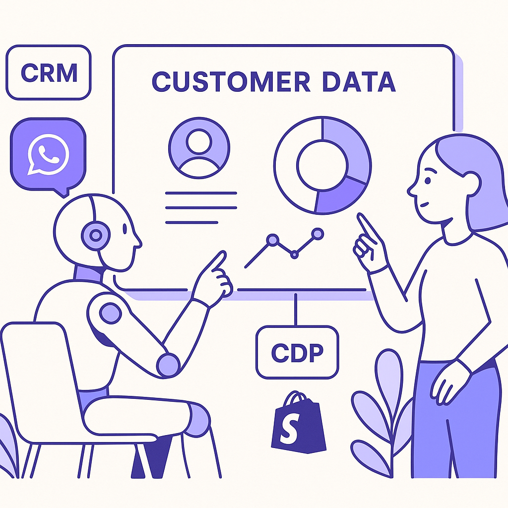
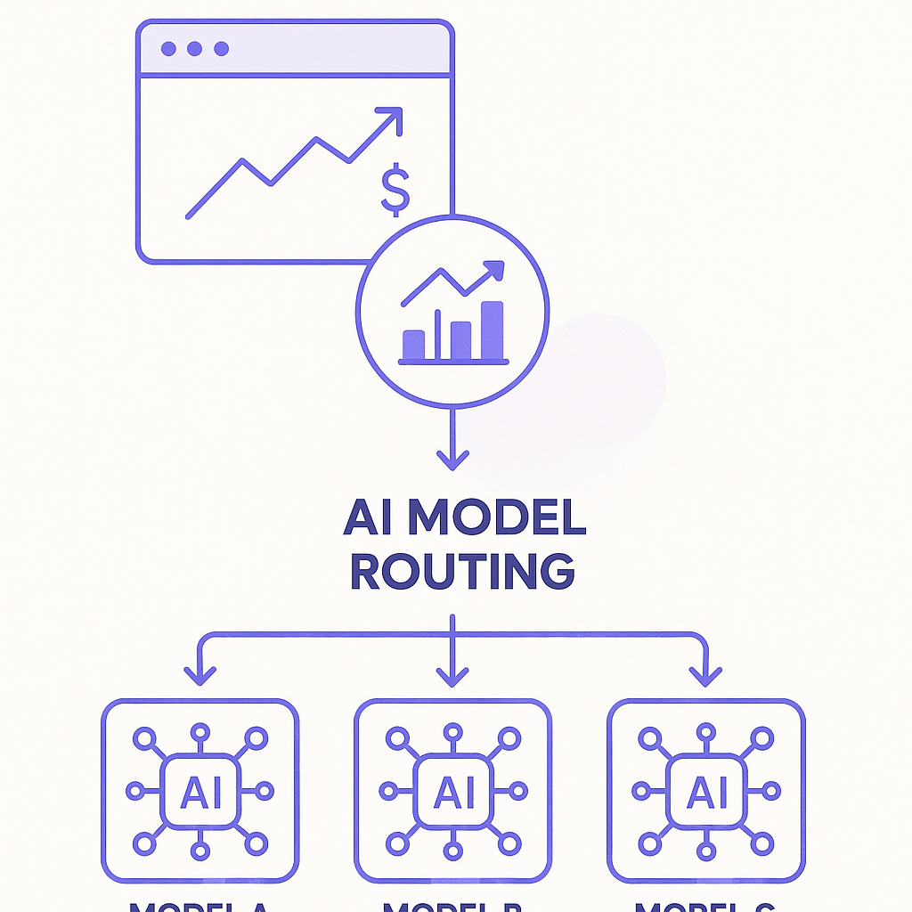

Publishing Recommendation
reviseThe posts exhibit excessive promotional content and lack critical analysis. They need to focus more on providing practical insights rather than predominantly advertising Purands AI services.
Today's drafts heavily emphasize promotional content for Purands AI, overshadowing valuable insights into the AI trends. While the integration of Purands AI's capabilities is relevant, the posts should strike a better balance by offering more independent analysis of industry developments and their implications. A revision is needed to align with our brand's practical and insightful tone, ensuring that each post delivers tangible value and insights to the reader beyond self-promotion.
LinkedIn Posts (10)
1. Google introduces AI chatbot-tuned Discover feed customization ★ Purands solution · high priority
CTA: How do you see AI personalization impacting your business strategy?
Alternative hooks
- Google's AI-tuned Discover feed is a game-changer for personalization.
- What if every customer interaction was tailored just for you?
- AI-driven personalization isn't the future; it's happening now.
Research behind this post (sources, summaries & confidence)
Google introduces AI chatbot-tuned Discover feed customization conf 0.80 · AI industry
Google's move to allow AI-tuned customization in its Discover feed highlights a significant trend towards personalized content delivery using AI. This is crucial for retention marketing as it enables more targeted and relevant interactions with users, potentially increasing engagement and retention rates.
Sources & what I took from each
- New feature allows customization of Discover feed using AI: The Verge article details Google's integration of AI for personalized Discover feed. ↗ read source
- Enhances personalized content delivery: AI-driven customization enables more targeted user interactions, which is a common practice in tech platforms. ↗ read source
Examples
- Google Discover feed using AI to tailor content to user preferences.
Recent news
- Google integrating AI into its services for improved user personalization.
Original trend links
Risks / caveats
- Privacy concerns over the extent of data used for personalization.
- Potential for algorithmic bias in content delivery.
2. Micro1 reaches $500M gross run rate amid AI training boom ★ Purands solution · high priority
CTA: How do you see data reshaping retention marketing in the next year?
Alternative hooks
- Micro1 just hit a $500M gross run rate. What’s the secret sauce? Data.
- Ever wonder what’s fueling Micro1’s $500M growth? It’s all about the data.
- Micro1's success story has one key ingredient: the power of data.
Research behind this post (sources, summaries & confidence)
Micro1 reaches $500M gross run rate amid AI training boom conf 0.80 · AI startups
Micro1's rapid growth due to AI training demand highlights the importance of data in AI development. This is relevant for retention marketing platforms focusing on data-driven strategies.
Sources & what I took from each
- Surging demand for AI training data: TechCrunch article highlights the growing need for data to train AI models. ↗ read source
- Strong growth trajectory for AI data startups: Micro1's financial success is indicative of the sector's growth potential. ↗ read source
Statistics
- $500M gross run rate achieved by Micro1.
Examples
- Micro1's use of data to support AI training initiatives.
Recent news
- Micro1's financial growth amidst rising AI data demands.
Original trend links
Risks / caveats
- Data privacy and ethical concerns in AI training.
- Market saturation risks as more players enter the AI data space.
3. Anthropic launches Cowork, a Claude Desktop agent ★ Purands solution · high priority
CTA: How do you see desktop AI agents transforming your business processes?
Alternative hooks
- Imagine an AI agent that can navigate your files, streamline workflows, and enhance productivity.
- Can an AI agent working within your files boost retention marketing? Absolutely.
- AI is moving into your desktop files. What does that mean for marketing?
Research behind this post (sources, summaries & confidence)
Anthropic launches Cowork, a Claude Desktop agent conf 0.78 · AI startups
The introduction of a desktop AI agent that can work within user files marks a shift towards more integrated and practical AI applications, which can be leveraged in retention marketing strategies.
Sources & what I took from each
- New AI agent can operate within files: VentureBeat article describes Anthropic's launch of the Cowork agent. ↗ read source
- Enhances AI integration in business processes: The AI agent's ability to work within files suggests a deeper integration into business workflows. ↗ read source
Examples
- Businesses using Cowork for file management and processing.
Recent news
- Anthropic's continued innovation in AI workspace solutions.
Original trend links
Risks / caveats
- Data security concerns with AI accessing sensitive files.
- Potential over-reliance on AI for critical business tasks.
4. OpenAI's growth in enterprise market ★ Purands solution · high priority
CTA: How are you integrating AI into your retention strategies?
Alternative hooks
- OpenAI is gaining ground in the enterprise market.
- Businesses in APAC are betting big on AI for retention.
- AI adoption strategies are shifting in the enterprise world.
Research behind this post (sources, summaries & confidence)
OpenAI's growth in enterprise market conf 0.78 · AI industry
OpenAI's increasing presence in the enterprise market marks a shift in AI adoption strategies, relevant for retention marketing as businesses continue to integrate AI into their operations.
Sources & what I took from each
- OpenAI gains traction among business users: TechCrunch reports on OpenAI's increasing adoption in enterprise settings. ↗ read source
- Volatility in enterprise AI spending patterns: The article discusses fluctuating investment behaviors in AI technologies by enterprises. ↗ read source
Examples
- Businesses integrating OpenAI's models into their workflows.
Recent news
- OpenAI's strategic moves to capture the enterprise market.
Original trend links
Risks / caveats
- Variable success in different industries impacting OpenAI's market share.
- Challenges in customizing AI solutions for diverse business needs.
5. Google's 'Preferred Sources' button to combat AI-driven traffic losses ★ Purands solution · high priority
CTA: How is your brand adapting to these new search dynamics?

⬇ Download image{kind=link}
Image prompt · isometric-flat
Caption: AI-driven retention strategies in action.
Alternative hooks
- Google's 'Preferred Sources' button is a new ally for publishers battling AI-driven traffic shifts.
- AI-driven search algorithms are changing the game. Is your brand keeping up?
- In the evolving world of AI search, staying visible isn't enough. It's time to engage.
Research behind this post (sources, summaries & confidence)
Google's 'Preferred Sources' button to combat AI-driven traffic losses conf 0.75 · CRM
As AI-driven search algorithms evolve, Google's new feature to help publishers retain traffic is crucial for CRM and retention marketing strategies, ensuring that content remains visible and accessible.
Sources & what I took from each
- New feature to make publishers preferred sources in search: TechCrunch reports on Google's feature for publishers to retain search visibility. ↗ read source
- Addresses AI-driven traffic challenges: The feature is designed to counteract traffic losses due to AI search algorithms. ↗ read source
Examples
- Publishers using Google's feature to maintain search traffic.
Recent news
- Google's efforts to support publishers amidst changing search dynamics.
Original trend links
Risks / caveats
- Potential misuse by publishers to manipulate search results.
- Could create bias in search visibility.
6. Salesforce's new Slackbot AI agent ★ Purands solution · high priority
CTA: How are you integrating AI into your customer engagement strategies?
Alternative hooks
- Salesforce's new AI Slackbot isn't just about chat.
- Can AI agents transform customer engagement the way they do workplace chat?
- Salesforce's Slackbot is a nudge toward smarter CRM strategies.
Research behind this post (sources, summaries & confidence)
Salesforce's new Slackbot AI agent conf 0.72 · AI industry
Salesforce's launch of a new AI agent for Slack highlights the ongoing competition to deploy AI in workplace environments, which can have implications for CRM and customer engagement strategies.
Sources & what I took from each
- Salesforce introduces AI-powered Slackbot: VentureBeat reports on Salesforce's new AI Slackbot to enhance workplace communication. ↗ read source
- Competes with Microsoft and Google in workplace AI: The introduction of the Slackbot is part of Salesforce's strategy to compete in the AI-powered workplace solutions market. ↗ read source
Examples
- Salesforce's Slackbot facilitating automated customer support.
Recent news
- Salesforce's innovations in AI to improve collaboration tools.
Original trend links
Risks / caveats
- Integration challenges with existing Slack workflows.
- User adoption and training requirements.
7. HoneyBook's move towards agentic AI for small businesses ★ Purands solution · high priority
CTA: Have you considered how AI could enhance your retention strategies?
Alternative hooks
- AI isn't just for the big players anymore.
- When small businesses leverage AI, the playing field levels.
- Why should big companies have all the AI fun?
Research behind this post (sources, summaries & confidence)
HoneyBook's move towards agentic AI for small businesses conf 0.70 · AI startups
HoneyBook's initiative to bring AI capabilities to small businesses underscores the trend of democratizing AI, allowing smaller enterprises to leverage AI for improving retention marketing strategies.
Sources & what I took from each
- HoneyBook introduces AI for small business operations: The article discusses HoneyBook's new AI tools for small businesses. ↗ read source
- Focus on streamlining business processes with AI: AI is used to automate and enhance business operations, making it accessible to smaller enterprises. ↗ read source
Examples
- Small businesses using HoneyBook's AI tools for project management.
Recent news
- HoneyBook's expansion into AI-driven business solutions.
Original trend links
Risks / caveats
- Adoption barriers for businesses unfamiliar with AI technology.
- Potential mismatch between AI capabilities and business needs.
8. Amazon's Prime Air expansion with autonomous drones
CTA: The real question: will consumer excitement outweigh the potential risks?
{kind=link}
Image prompt · isometric-flat
Caption: The future of drone delivery logistics.
Alternative hooks
- Remember when two-day delivery felt revolutionary?
- Amazon's drones are set to reach 500 neighborhoods by 2026.
- Is drone delivery the next leap in e-commerce logistics?
Research behind this post (sources, summaries & confidence)
Amazon's Prime Air expansion with autonomous drones conf 0.85 · AI industry
Amazon's expansion of its drone delivery network signifies a major advancement in logistic capabilities, which can impact e-commerce and customer retention through improved delivery services.
Sources & what I took from each
- Significant expansion of drone delivery network: Ars Technica article discusses Amazon's plans for drone delivery expansion. ↗ read source
- Potential impact on e-commerce delivery efficiency: The expansion is expected to enhance delivery speed and efficiency for Amazon. ↗ read source
Statistics
- Amazon plans to reach 500 neighborhoods with drone delivery by 2026.
Examples
- Amazon using drones to reduce delivery times in urban areas.
Recent news
- Amazon's regulatory challenges in expanding drone delivery services.
Original trend links
Risks / caveats
- Regulatory hurdles and public safety concerns.
- Technical challenges in scaling drone operations.
9. Stripe acquires OpenRouter to enhance AI model routing capabilities
CTA: What do you think?

⬇ Download image{kind=link}
Image prompt · isometric-flat
Caption: AI model routing optimization.
Alternative hooks
- When Stripe acquired OpenRouter, it wasn't just another tech merger.
- Stripe's acquisition of OpenRouter marks a shift in AI model routing.
- What does Stripe's acquisition of OpenRouter mean for AI in finance?
Research behind this post (sources, summaries & confidence)
Stripe acquires OpenRouter to enhance AI model routing capabilities conf 0.70 · AI startups
Stripe's acquisition of OpenRouter signals an increasing trend towards integrating AI model selection and routing within financial platforms, which can have implications for AI-driven retention marketing solutions.
Sources & what I took from each
- Stripe expands AI capabilities through acquisition: The acquisition of OpenRouter by Stripe is reported in the AI industry news. ↗ read source
- Focus on AI model routing for enhanced service delivery: The article discusses how Stripe plans to use OpenRouter's technology to improve its AI routing capabilities. ↗ read source
Examples
- Stripe using OpenRouter to enhance its AI-based transaction processing.
Recent news
- Stripe's strategic acquisitions to bolster its AI infrastructure.
Original trend links
Risks / caveats
- Integration challenges with existing systems.
- Dependence on acquired technology for core operations.
10. One in five enterprises can't control AI agent's spending
CTA: How are you managing AI costs in your organization?
Alternative hooks
- One in five enterprises struggles with AI spending.
- Can you control your AI agent's expenses?
- AI systems can lead to unexpected costs.
Research behind this post (sources, summaries & confidence)
One in five enterprises can't control AI agent's spending conf 0.65 · AI industry
The challenge of controlling AI agent spending in enterprises highlights a critical area for retention marketing platforms, as cost management becomes crucial for sustaining AI operations.
Sources & what I took from each
- Enterprises face challenges with AI agent spending control: VentureBeat discusses the issues enterprises face with AI agent spending. ↗ read source
- Highlights need for better AI cost management: The article outlines the growing need for better systems to manage AI-related expenses. ↗ read source
Statistics
- One in five enterprises reports issues with controlling AI spending.
Recent news
- Growing concerns over AI operational costs in large businesses.
Original trend links
Risks / caveats
- Potential financial losses due to uncontrolled AI spending.
- Need for enhanced oversight and auditing tools.
Today's Trends
| # | Trend | Category | Why it matters |
|---|---|---|---|
| 1 | Google introduces AI chatbot-tuned Discover feed customization
source |
AI industry | Google's move to allow AI-tuned customization in its Discover feed highlights a significant trend towards personalized content delivery using AI. This is crucial for retention marketing as it enables more targeted and relevant interactions with users, potentially increasing engagement and retention rates. |
| 2 | Stripe acquires OpenRouter to enhance AI model routing capabilities
source |
AI startups | Stripe's acquisition of OpenRouter signals an increasing trend towards integrating AI model selection and routing within financial platforms, which can have implications for AI-driven retention marketing solutions. |
| 3 | Google's 'Preferred Sources' button to combat AI-driven traffic losses
source |
CRM | As AI-driven search algorithms evolve, Google's new feature to help publishers retain traffic is crucial for CRM and retention marketing strategies, ensuring that content remains visible and accessible. |
| 4 | Anthropic launches Cowork, a Claude Desktop agent
source |
AI startups | The introduction of a desktop AI agent that can work within user files marks a shift towards more integrated and practical AI applications, which can be leveraged in retention marketing strategies. |
| 5 | Salesforce's new Slackbot AI agent
source |
AI industry | Salesforce's launch of a new AI agent for Slack highlights the ongoing competition to deploy AI in workplace environments, which can have implications for CRM and customer engagement strategies. |
| 6 | One in five enterprises can't control AI agent's spending
source |
AI industry | The challenge of controlling AI agent spending in enterprises highlights a critical area for retention marketing platforms, as cost management becomes crucial for sustaining AI operations. |
| 7 | HoneyBook's move towards agentic AI for small businesses
source |
AI startups | HoneyBook's initiative to bring AI capabilities to small businesses underscores the trend of democratizing AI, allowing smaller enterprises to leverage AI for improving retention marketing strategies. |
| 8 | Micro1 reaches $500M gross run rate amid AI training boom
source |
AI startups | Micro1's rapid growth due to AI training demand highlights the importance of data in AI development. This is relevant for retention marketing platforms focusing on data-driven strategies. |
| 9 | OpenAI's growth in enterprise market
source |
AI industry | OpenAI's increasing presence in the enterprise market marks a shift in AI adoption strategies, relevant for retention marketing as businesses continue to integrate AI into their operations. |
| 10 | Amazon's Prime Air expansion with autonomous drones
source |
AI industry | Amazon's expansion of its drone delivery network signifies a major advancement in logistic capabilities, which can impact e-commerce and customer retention through improved delivery services. |
Risk Assessment
- Excessive promotion of Purands AI services can detract from objectivity.
- Potential overstatement of AI capabilities in personalization and retention marketing.
- Lack of critical assessment of the challenges and limitations of AI technologies discussed.
Suggested LinkedIn Comments (30)
Open each post, then paste the copied comment. Nothing is posted automatically.
1. insight · rss:techcrunch.com — Together, these permits would allow up to 8,000 robotaxis to be deployed over th
Post by: rss:techcrunch.com
Why it works: It acknowledges the scale while highlighting the critical factors of success: safety and acceptance.
↗ Open LinkedIn post to paste comment2. expansion · rss:techcrunch.com — Surging demand for AI training data is driving rapid growth for the startup and
Post by: rss:techcrunch.com
Why it works: It adds depth by considering the ethical implications of data sourcing, which the post doesn't mention.
↗ Open LinkedIn post to paste comment3. opinion · rss:techcrunch.com — Investors want founders who understand the financial reality of their business.
Post by: rss:techcrunch.com
Why it works: It underscores the critical importance of financial literacy in entrepreneurship, aligning with the post's message.
↗ Open LinkedIn post to paste comment4. respectful challenge · rss:techcrunch.com — Businesses are willing to flop back and forth as each lab releases new models, v
Post by: rss:techcrunch.com
Why it works: It challenges the post's implication of fickle spending by advocating for a focus on sustainable AI impact.
↗ Open LinkedIn post to paste comment5. insight · rss:techcrunch.com — Ever wanted someone else to do your texting for you? ChatGPT is being offered up
Post by: rss:techcrunch.com
Why it works: It highlights the trade-off between efficiency and personalization, a key consideration not addressed in the post.
↗ Open LinkedIn post to paste comment6. opinion · rss:techcrunch.com — An effort to transform the world of sports through steroid use doesn't exactly s
Post by: rss:techcrunch.com
Why it works: It provides a moral angle, emphasizing that financial success is tied to ethical and market considerations.
↗ Open LinkedIn post to paste comment7. insight · rss:techcrunch.com — Jason Kelce joked that people should cool data centers with their pee, rather th
Post by: rss:techcrunch.com
Why it works: It acknowledges the humor while recognizing that such ideas can lead to practical innovations.
↗ Open LinkedIn post to paste comment8. insight · rss:techcrunch.com — A hacker pretending to work for a leading cryptocurrency news website targeted s
Post by: rss:techcrunch.com
Why it works: It emphasizes the need for constant vigilance in cybersecurity, expanding on the post's warning.
↗ Open LinkedIn post to paste comment9. expansion · rss:techcrunch.com — Mark Zuckerberg just bought a cozy abode somewhat close to Meta’s international
Post by: rss:techcrunch.com
Why it works: It ties a personal decision to a broader business strategy, adding context to the post.
↗ Open LinkedIn post to paste comment10. respectful challenge · rss:techcrunch.com — Google is giving publishers a new button that lets readers make them a preferred
Post by: rss:techcrunch.com
Why it works: It critiques the solution as insufficient, encouraging deeper exploration of the underlying problem.
↗ Open LinkedIn post to paste comment11. insight · rss:www.theverge.com — Google will soon allow you to customize your Discover feed by describing what yo
Post by: rss:www.theverge.com
Why it works: It highlights a critical consideration that Google must address while deploying this new feature.
↗ Open LinkedIn post to paste comment12. insight · rss:www.theverge.com — Riot Games is already winding down work on 2XKO, the free-to-play League of Lege
Post by: rss:www.theverge.com
Why it works: It acknowledges the post-launch challenges in gaming, adding depth to the discussion about 2XKO's closure.
↗ Open LinkedIn post to paste comment13. opinion · rss:www.theverge.com — Genesis, Hyundai's luxury brand, just revealed its first full-size, three-row el
Post by: rss:www.theverge.com
Why it works: It balances excitement about design with a practical view on what makes a vehicle successful, appealing to potential buyers.
↗ Open LinkedIn post to paste comment14. opinion · rss:www.theverge.com — Meta CEO Mark Zuckerberg now owns an actual castle. Zuckerberg and his wife Pris
Post by: rss:www.theverge.com
Why it works: It ties a personal purchase to a broader, relevant issue, encouraging reflection on societal impacts.
↗ Open LinkedIn post to paste comment15. respectful challenge · rss:www.theverge.com — Roblox is promising more changes to its child safety features following testing
Post by: rss:www.theverge.com
Why it works: It calls for accountability while acknowledging the importance of the company's ongoing efforts.
↗ Open LinkedIn post to paste comment16. opinion · rss:www.theverge.com — Another day, another sad thing to report about our compromised Federal Communica
Post by: rss:www.theverge.com
Why it works: It presents a clear stance on the importance of internet speeds for societal progress.
↗ Open LinkedIn post to paste comment17. insight · rss:www.theverge.com — Some Framework Laptop 13 owners with last-gen AMD chips have reported that a rec
Post by: rss:www.theverge.com
Why it works: It stresses the importance of pre-launch precautions, relevant to both companies and users.
↗ Open LinkedIn post to paste comment18. insight · rss:www.theverge.com — OpenAI has had a hell of a year. The company spent months battling former cofoun
Post by: rss:www.theverge.com
Why it works: It contextualizes the company's challenges within the larger framework of business strategy and growth.
↗ Open LinkedIn post to paste comment19. respectful challenge · rss:www.theverge.com — Google's new HiLight notification LED on the Pixel 11 Pro is nearly useless. Out
Post by: rss:www.theverge.com
Why it works: It critiques the feature while suggesting potential for improvement, offering constructive feedback.
↗ Open LinkedIn post to paste comment20. insight · rss:www.theverge.com — Best Buy has a whole host of LG products discounted for today’s Deal of the Day
Post by: rss:www.theverge.com
Why it works: It provides context on why such deals occur, adding depth to the consumer perspective.
↗ Open LinkedIn post to paste comment21. insight · rss:feeds.arstechnica.com — FCC ban on foreign-made robots accelerated RoboStore’s US manufacturing plans.
Post by: rss:feeds.arstechnica.com
Why it works: It offers a nuanced view on the impact of regulatory changes, highlighting both opportunities and challenges.
↗ Open LinkedIn post to paste comment22. opinion · rss:feeds.arstechnica.com — Arianespace hasn’t publicly disclosed the cost for an Ariane 6 launch.
Post by: rss:feeds.arstechnica.com
Why it works: It takes a clear stance on the importance of transparency in the aerospace industry.
↗ Open LinkedIn post to paste comment23. opinion · rss:feeds.arstechnica.com — Survivors reconnect with those who saved them in National Geographic's <em>9/11:
Post by: rss:feeds.arstechnica.com
Why it works: It connects the post to broader themes of humanity and resilience, offering a thoughtful reflection.
↗ Open LinkedIn post to paste comment24. insight · rss:feeds.arstechnica.com — Roblox is first platform to submit to independent audits under the Online Safety
Post by: rss:feeds.arstechnica.com
Why it works: It acknowledges the significance of Roblox's actions in setting industry benchmarks for safety and transparency.
↗ Open LinkedIn post to paste comment25. respectful challenge · rss:feeds.arstechnica.com — A retractable screen, a huge heads-up display, and an optional 4-seat VIP interi
Post by: rss:feeds.arstechnica.com
Why it works: It highlights the need for balancing innovation with safety, offering a responsible perspective on luxury tech in automobiles.
↗ Open LinkedIn post to paste comment26. expansion · rss:feeds.arstechnica.com — The yeetcycling math resembles asteroid mining in reverse.
Post by: rss:feeds.arstechnica.com
Why it works: It expands on the original metaphor, inviting readers to consider broader applications of resource management.
↗ Open LinkedIn post to paste comment27. insight · rss:feeds.arstechnica.com — People-search tool ClarityCheck left database containing more than 9M image file
Post by: rss:feeds.arstechnica.com
Why it works: It offers a practical takeaway on the importance of cybersecurity, reinforcing the need for vigilance in data protection.
↗ Open LinkedIn post to paste comment28. insight · rss:feeds.arstechnica.com — Cryptographic Context Injection is only the latest way to break an LLM safety gu
Post by: rss:feeds.arstechnica.com
Why it works: It provides a forward-looking perspective on the evolving landscape of AI security, stressing the need for ongoing adaptation.
↗ Open LinkedIn post to paste comment29. opinion · rss:feeds.arstechnica.com — Without a rescue, NASA's Swift Observatory is expected to reenter the atmosphere
Post by: rss:feeds.arstechnica.com
Why it works: It underscores the value of investment in scientific infrastructure, highlighting the impact on research if neglected.
↗ Open LinkedIn post to paste comment30. insight · rss:feeds.arstechnica.com — US residents face trade-offs as delivery drone services such as Prime Air expand
Post by: rss:feeds.arstechnica.com
Why it works: It captures the essence of the debate surrounding drone services, emphasizing the need for careful consideration of broader implications.
↗ Open LinkedIn post to paste comment